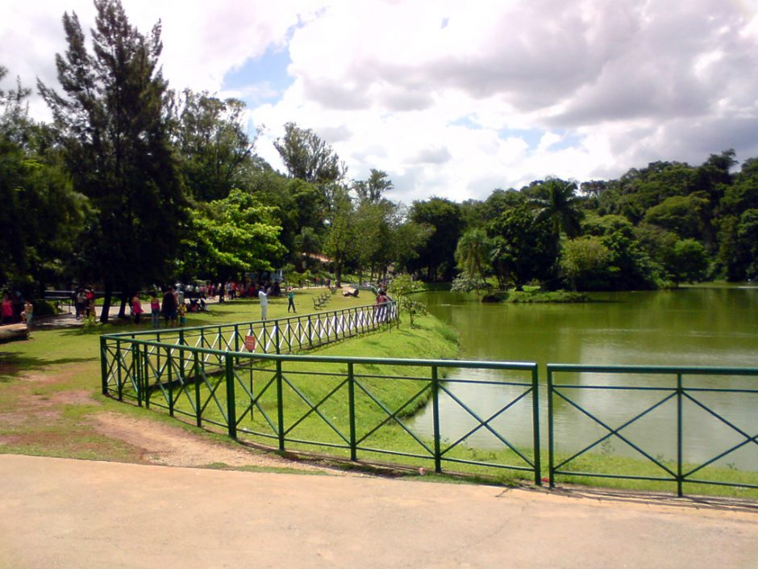
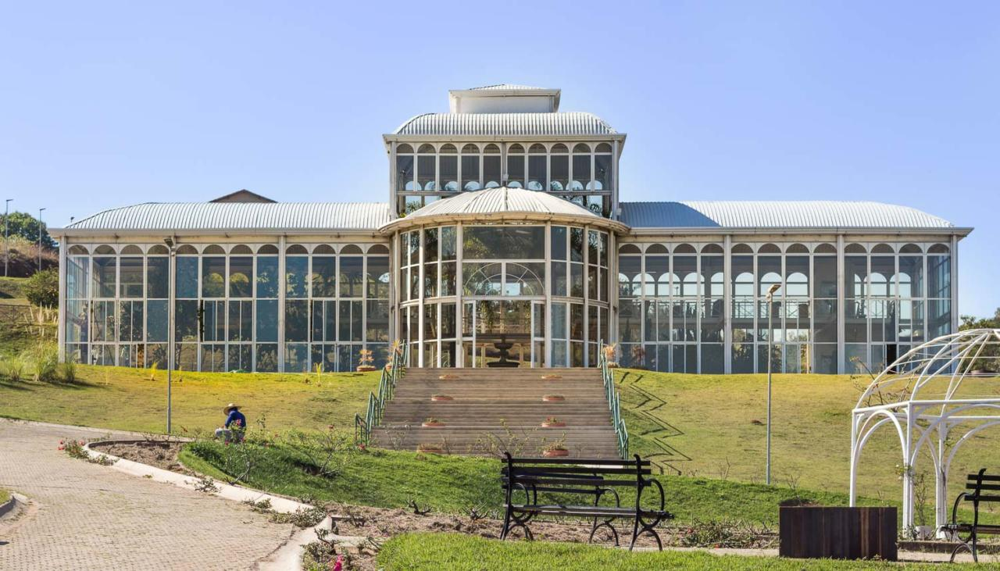
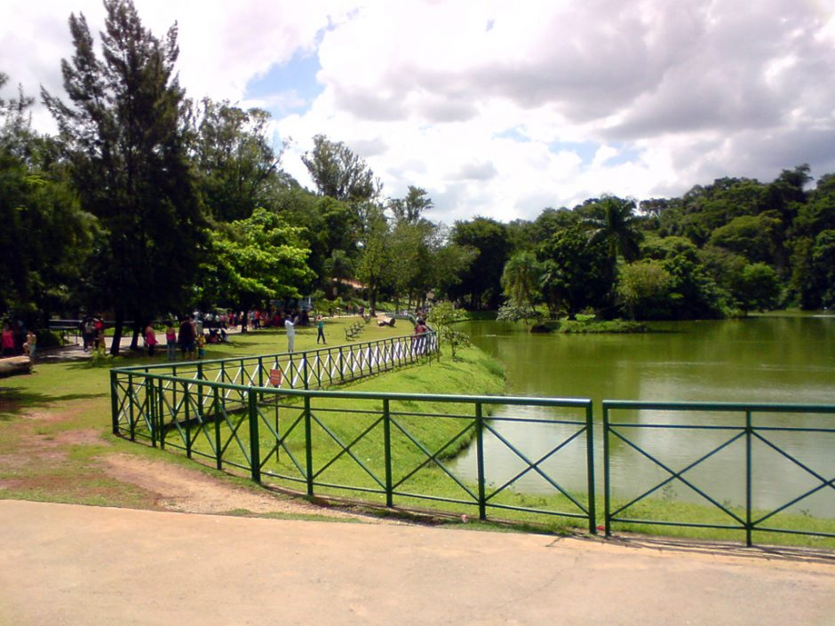
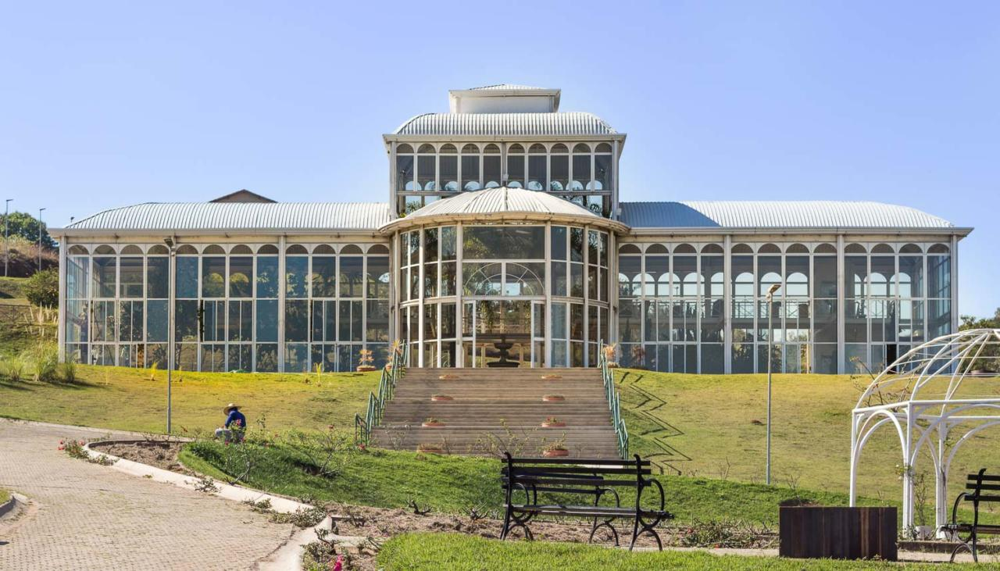
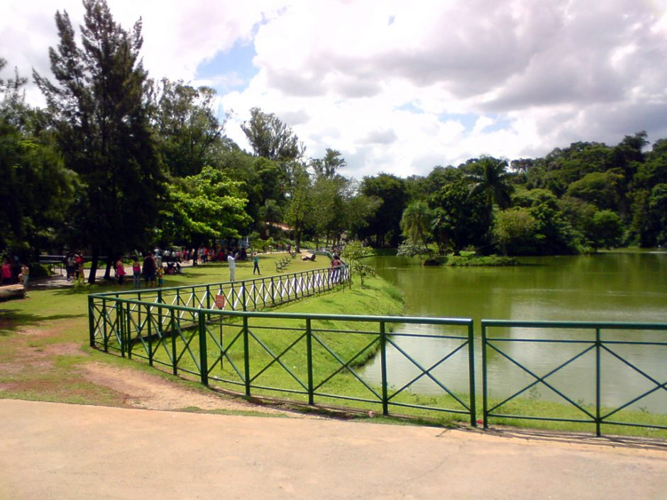
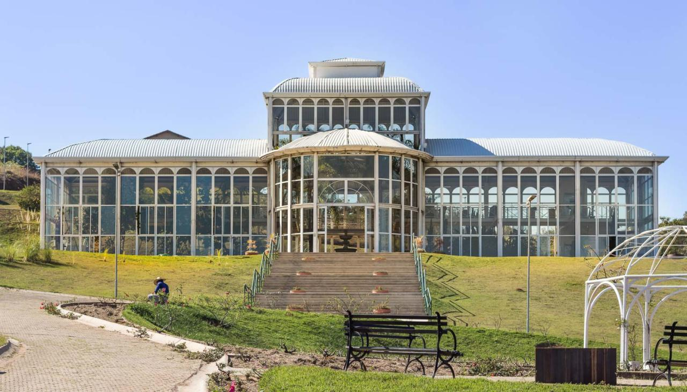
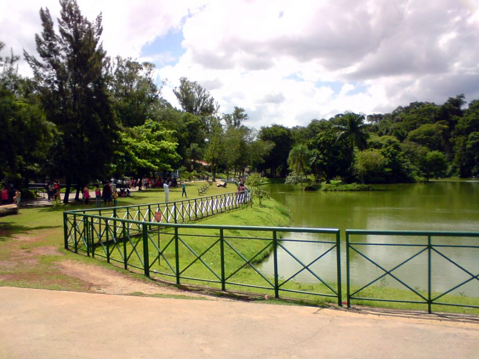
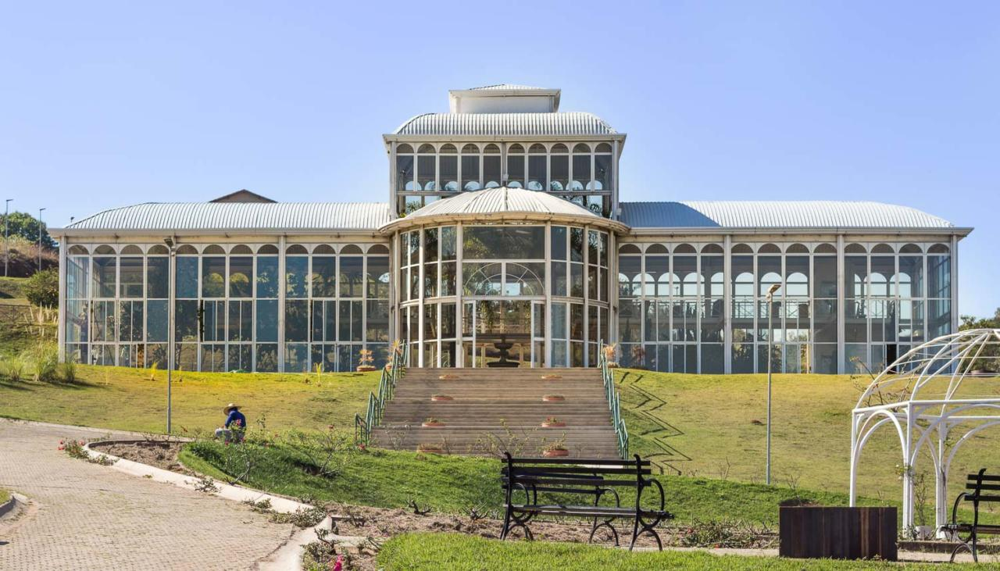

A história de Sorocaba tem início em 1599. Don Francisco de Souza, governador-geral do Brasil (entre 1591 a 1602), ainda acreditando na existência de ouro, esteve na região e levantou o pelourinho " símbolo do poder real na Nova Vila de Nossa Senhora da Ponte de Mont Serrat.A cidade é um importante polo industrial do estado de São Paulo e do Brasil, sendo que sua produção industrial chega a mais de 120 países, atingindo um PIB acima dos R$ 32 bilhões, o décimo nono maior do país, a frente de capitais como São Luís, Belém, Vitória, Natal e Florianópolis.

O Parque Zoológico Municipal Quinzinho de Barros – Zoológico Municipal de Sorocaba é um jardim zoológico situado no município de Sorocaba, estado de São Paulo, no Brasil, sendo considerado o segundo zoológico do Brasil em número de espécies.Inserido na Vila Hortência, dentro da região leste da cidade de Sorocaba, em uma área de cerca de 130.000 m², tem em seu interior uma faixa de mata atlântica de transição em estágio secundário, um lago, o Museu Histórico Sorocabano.
O Jardim Botânico Irmãos Villas Bôas localiza-se no município de Sorocaba. A intenção da criação do jardim é o estudo e pesquisa da flora da região, além de desenvolver a consciência ambiental e lazer da cidade de Sorocaba, e conta com uma área de 70.000,00 m² que engloba fragmentos de vegetação de transição entre cerrado e mata atlântica. O local está estruturado para ser um importante centro de conservação da biodiversidade e cumprir com eficiência as funções de educação para desenvolvimento sustentável, pesquisa, conservação, lazer e cultura.
O Museu de Arte Contemporânea de Sorocaba - MACS é uma instituição privada municipal cultural, artística e educativa, espaço dinâmico e plural que prioriza a difusão das artes visuais. Seu acervo tem foco na arte contemporânea brasileira e abarca as mais variadas tendências artísticas e contemporâneas.No projeto do museu constam quatro salas expositivas: sala de exposições temporárias com 360 m²; sala climatizada (futuro acervo) com 200 m²; galeria para artes gráficas e fotografia com 50 metros lineares de painéis; praça de esculturas e instalações com 800 m².
| Nome do prefeito | Ano eleito | Partido | |
|---|---|---|---|
| Rodrigo Maganhato | 1° de janeiro de 2021 | Republicanos | Atual |
| Jaqueline Lilian Barcelos Coutinho | 2 de agosto de 2019 | PTB/PDT/PSL | |
| José Caldini Crespo | 1º de janeiro de 2017 | PT | |
| Antonio Carlos Pannunzio | 1º de janeiro de 2013 | PSDB |
| Dados tecnicos baseados em 6 pontos , sendo eles Populaçao, trabalho e rendimento, educação, economia, saúde, território e ambiente | ||
|---|---|---|
| POPULAÇÃO | População estimada [2021] | 695.328 pessoas |
| TRABALHO E RENDIMENTO | Salário médio mensal dos trabalhadores formais | 3,0 salários mínimos |
| EDUCAÇÃO | Matrículas no ensino fundamental | 83.454matrículas |
| ECONOMIA | PIB per capita | R$ 54.878,75 |
| SAÚDE | Mortalidade Infantil | 10,43 óbitos por mil nascidos vivos |
| TERRITÓRIO E AMBIENTE | Área da unidade territorial | 449,872km² |
Todos os dados usados na tabela sao fornecidos pelo IBGE : Site do IBGE